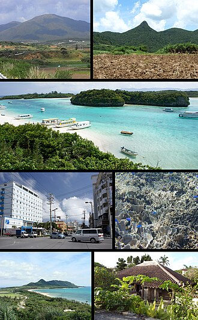
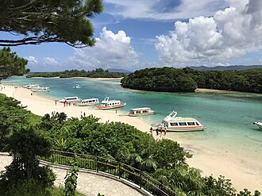
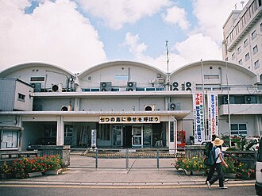

Галерея Исигаки
Синее море, островные пейзажи и атмосфера района Исигаки.
Общий вид Исигаки

Город Исигаки

Залив Кабира

Пейзажи Яэяма

- Изображения: Wikimedia Commons
Синее море, островные пейзажи и атмосфера района Исигаки.


